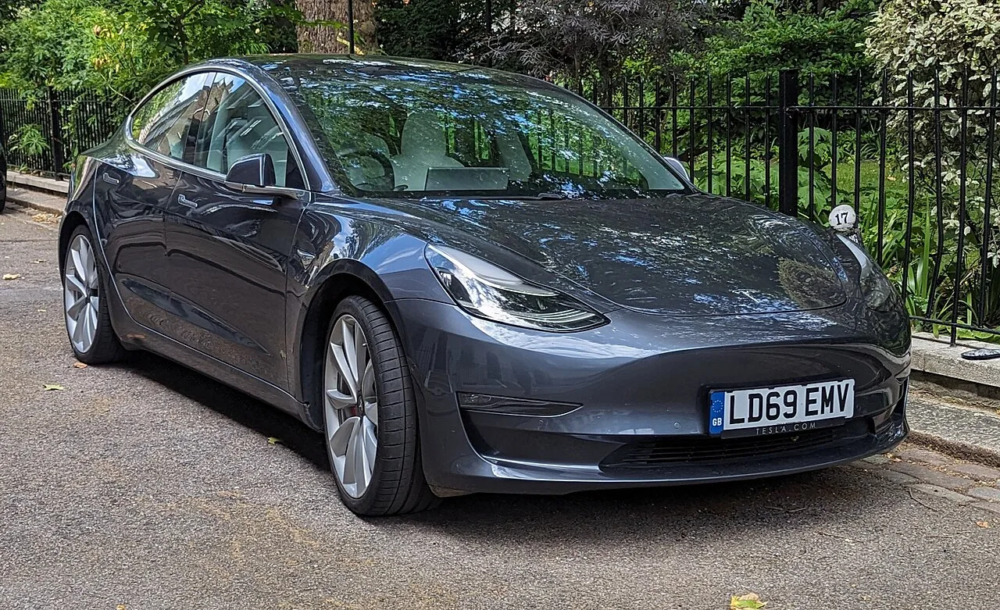

▲ 두 사고 차량은 모두 2020년식 모델 3였다. 사진은 동일 세대인 페이스리프트 이전 모델 3 ⓒ Wikimedia Commons
1. 애리조나 메사, 새벽 3시
2025년 10월 31일 새벽 3시경이었습니다. 미국 애리조나주 메사의 Loop 202(레드 마운틴) 고속도로, 답슨 로드 인근에서 2020년식 테슬라 모델 3가 주행 차로에 정지해 있었습니다.
뒤에서 포드 F-350 픽업트럭이 들이받았습니다. 모델 3 운전자는 현장에서 사망했습니다.
기록에 남은 속도는 시속 0km였습니다. 갓길이 아니라 차가 달리는 차로 위였고, 날씨는 맑았습니다. 도로에 특별한 이상이 있었다는 기록도 없습니다.
2. 플로리다에서도 같은 일이
같은 달, 플로리다에서 거의 동일한 사고가 있었습니다. 역시 2020년식 모델 3였고, 역시 주행 중인 고속도로 차로에 멈춰 선 상태였으며, 역시 주행보조가 작동 중이었습니다. 결과도 같았습니다.

▲ 두 사고 모두 2020년식 모델 3에서 발생했다. 사진은 동일 세대 차량 ⓒ Wikimedia Commons
사고 한 건은 우연일 수 있습니다. 차종, 연식, 상황, 기록된 시스템 상태까지 겹치는 사고가 같은 달에 두 번이면 이야기가 달라집니다. Electrek은 이를 "일회성이 아니라 패턴"이라고 표현했습니다.
3. 'Verified Engaged'가 뜻하는 것
NHTSA(미 도로교통안전국) 제출 자료의 기록은 두 줄로 요약됩니다. 자동화 시스템 상태는 'Verified Engaged', 차량 상태는 'Stopped', 속도는 0mph입니다.
'Verified Engaged'는 제조사가 데이터로 확인했다는 뜻입니다. 운전자의 주장이나 목격자 진술이 아니라, 차량이 남긴 기록으로 시스템 작동이 확인됐다는 의미입니다. 이 표기는 뒤집기 어렵습니다.
다만 어떤 시스템인지는 공개되지 않았습니다. 테슬라는 오토파일럿이었는지 FSD(Full Self-Driving)였는지 밝히지 않았습니다. NHTSA는 주행보조 작동 여부를 사고 발생 30초 이내 기준으로 보고하도록 하고 있는데, 이 구분은 보고 항목에 포함되지 않았습니다.

▲ 테슬라의 주행보조 작동 상태는 차량이 자체적으로 기록한다. 사진은 현행 모델 3 실내 ⓒ Wikimedia Commons
4. 왜 원인을 모르나 — 가려진 보고서
핵심은 여기입니다. 차가 왜 고속도로 한복판에 멈췄는지를 설명할 데이터를 테슬라가 '영업비밀(confidential business information)'로 가렸습니다.
Electrek은 이 조치가 예외가 아니라고 지적했습니다. 테슬라가 NHTSA에 제출한 보고서의 99.9%에 같은 방식의 가림 처리가 적용돼 있다는 것입니다. 사고 보고서는 제출되지만, 원인 규명에 필요한 부분은 대부분 비어 있는 셈입니다.
테슬라는 현재 NHTSA의 조사 대상이기도 합니다. 오토파일럿과 FSD 관련 사고를 어떻게 보고하는지가 조사 항목입니다. 사고 자체가 아니라 보고 방식이 조사 대상이라는 점이 이번 사안의 성격을 보여 줍니다.
5. '팬텀 브레이킹'이라는 오래된 의심
테슬라 주행보조에는 오래전부터 팬텀 브레이킹 지적이 따라다녔습니다. 앞에 아무것도 없는데 시스템이 장애물로 오인해 급감속하는 현상입니다. 그림자, 육교, 대형 차량의 실루엣 등이 유발 요인으로 거론돼 왔습니다.
다만 이번 두 사고가 팬텀 브레이킹 때문이라는 증거는 없습니다. Electrek도 이 점을 분명히 했습니다. 감속이 아니라 완전 정지 상태가 유지됐다는 점에서 단순 급제동과는 양상이 다릅니다. 급제동은 순간이지만, 뒤차가 들이받을 때까지 서 있었다면 그것은 다른 문제입니다.
가능성은 여러 갈래로 열려 있습니다. 시스템 오류, 차량 자체의 고장, 운전자의 건강 이상, 또는 이들의 조합일 수 있습니다. 그리고 어느 쪽인지를 가릴 수 있는 데이터가 지금은 공개돼 있지 않습니다.

▲ 현행 모델 3. 사고 차량은 이전 세대지만 주행보조 소프트웨어 기반은 세대를 넘어 공유된다 ⓒ Wikimedia Commons
6. 국내 운전자에게 남는 것
첫째, 국내에서 팔리는 테슬라도 같은 시스템을 씁니다. 오토파일럿은 기본 탑재이고, FSD는 옵션입니다. 미국에서 보고된 사안이지만 소프트웨어 기반은 공유됩니다.
둘째, 국내 도로는 조건이 더 불리합니다. 고속도로 차로 폭과 교통량, 야간 조명 상황을 감안하면 정지 차량이 뒤차에 발견되기까지의 시간이 더 짧습니다. 정지 자체가 사고로 이어질 확률이 미국보다 낮다고 볼 근거는 없습니다.
셋째, 주행보조는 여전히 '보조'입니다. 이름이 무엇이든 현재 판매되는 시스템은 운전자가 즉시 개입할 수 있는 상태를 전제로 합니다. 손을 떼도 되는지 여부보다, 이상이 생겼을 때 몇 초 안에 개입할 수 있는가가 실질적인 기준입니다.
넷째, 사고 기록은 남습니다. 국내에서도 주행보조 작동 중 사고가 나면 차량 기록이 과실 판단의 근거가 됩니다. 이번 사안이 보여 주는 것은 그 기록에 접근할 수 있느냐가 별개의 문제라는 점입니다.
정리하면 이렇습니다. 두 건의 사고는 조건이 놀라울 만큼 닮았습니다. 그런데 닮은 부분을 설명할 데이터는 가려져 있습니다. 규제 기관이 지금 들여다보는 것도 사고의 원인이 아니라 원인을 볼 수 없게 만든 구조입니다.